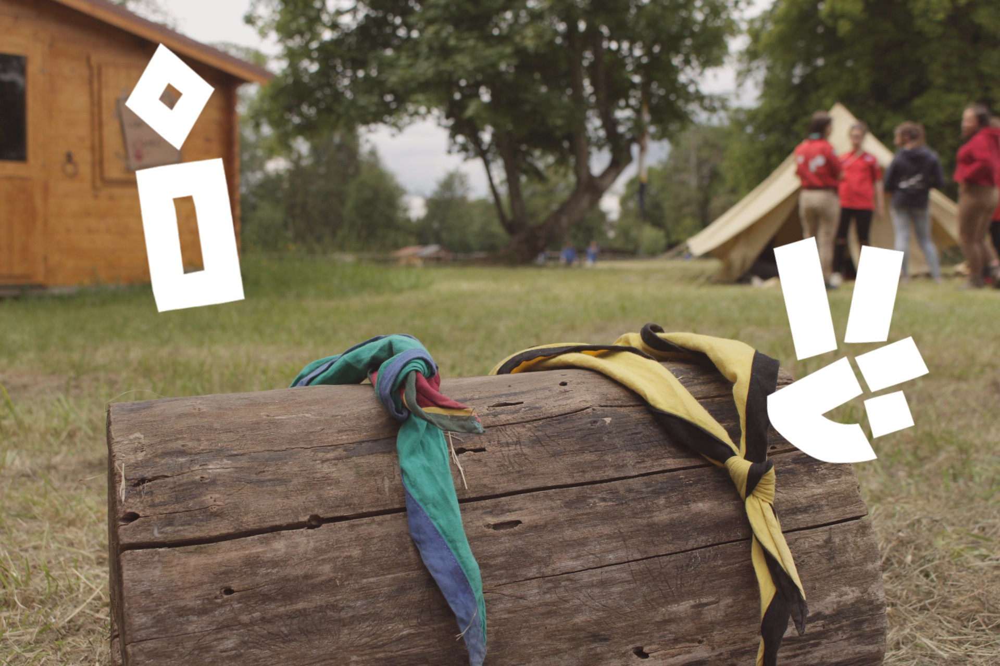

Bienvenue chez les scouts !
Site expliquant ce qu'est le mouvement des Scouts et Guides de France et comment se fait la communication entre les jeunes, avec les parents et au sein du groupe. Vous trouverez également des petites animations comme un jeu de memory.